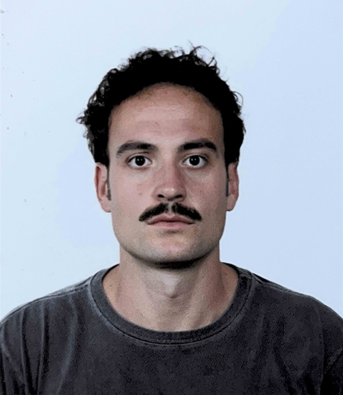

hello, this is tunç. - /tunʧ/ - and maybe "toonch".
PhD student in numerical cosmology (2022–2026) at UFES, Brasil.
i am somewhere between gravitational lensing, statistics, and too many bash commands. some of that chaos was published here. the rest is an ongoing attempt to understand things that seem to resist being understood.
most days are spent trying to figure out some statistical concept, installing another "beautiful" python package, or fighting with the math in a paper. progress is not linear. when it feels linear, something is probably off. most of it feels like debugging reality.
so here is not a portfolio. it is more of a digital collection of my life, experiences, thoughts, projects. that being said, I wrote something longer about myself, closer to how i think, here. pascal once wrote: "Je n'ai fait celle-ci plus longue que parce que je n'ai pas eu le loisir de la faire plus courte.I made this longer (letter) because I did not have free time to make it shorter." i agree. more or less.
this site is a mix of things i care about. no guarantee you will.
course of life.
academic background and some life experiences.
click on the cards to learn more. one can be more important than the other. choose wisely.
publications.
accurate cosmological emulator for the probability distribution function of gravitational lensing of point sources.
kinetic coupled tachyon: a dynamical system analysis.
education.
Ph.D. Candidate in Cosmology.
Federal University of Espírito Santo.
supervisor Valerio Marra.
co-supervisors: Stefano Borgani & Tiago Castro.
Master's in Physics.
Sorbonne University.
M1: paris physics master (PPM) program.
M2: nuclei, particles, astroparticles and cosmology (NPAC) program.
B.Sc. in Electrical Engineering (minor in Physics Engineering).
Istanbul Technical University.
Included Erasmus exchange at Sorbonne University.
graduation project: a study on quantum computation: comparison between classical and quantum logic gates with applications.
languages.
things i like.
above sections may include things i do or do not enjoy. below is where i
try to optimize my pleasure.
what i read, watch, listen, eat, and do.
not a bookworm. wish i was.
these three books changed my life.
btw many thanks to neslihan serap şengör who introduced this book in her lecture Circuit and System Analysis.
okay. this is not cinephilia.
it’s about finding something worth spending 2–3 hours on.
below is my kind of top 3. it’s hard, right?
they say that mozart once said
"Ich möchte alles haben was gut, ächt und schöne ist!"
I would like to have everything that is good, genuine, and
beautiful!
I understand him
sometimes. with a translator. yes. sometimes.
sometimes i go places and write about them.
This one in particular was an uppercut to my ego and social anxiety.